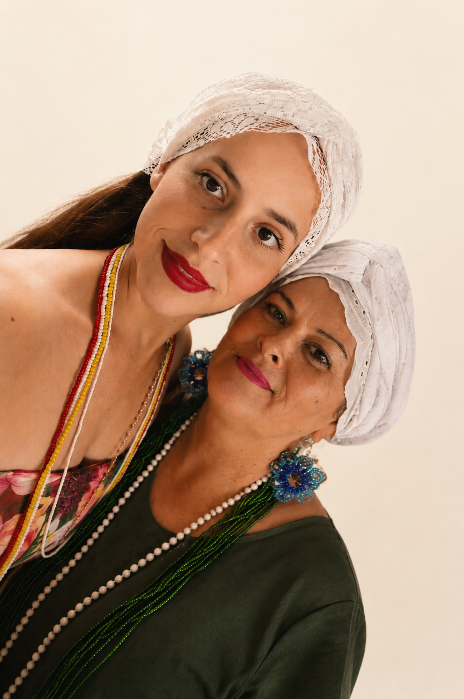

Conheça a história da Saboaria das Marias
Uma marca criada através da união entre tradição familiar, produção artesanal e o desejo de transformar o banho em um momento especial de cuidado, acolhimento e conexão.
Uma marca criada através da união entre tradição familiar, produção artesanal e o desejo de transformar o banho em um momento especial de cuidado, acolhimento e conexão.

A Saboaria das Marias nasceu do cuidado, da escuta e do conhecimento ancestral das ervas.
Há cerca de dois anos, percebemos a necessidade de ajudar pessoas que conviviam com diferentes problemas de pele e que não encontravam resultados satisfatórios nos tratamentos convencionais.
Inspiradas pelos saberes das ervas medicinais, presentes em nossa trajetória desde a infância, iniciamos uma profunda pesquisa sobre as propriedades de cada planta e seus benefícios para o bem-estar físico, emocional e energético.
Assim nasceram nossas linhas especiais, incluindo os sabonetes terapêuticos, os cuidados faciais com argilas, os sabonetes voltados para autoestima e a Linha dos Orixás.
Mais do que produzir sabonetes artesanais, nossa missão é promover bem-estar, acolhimento e transformação através do poder das ervas.